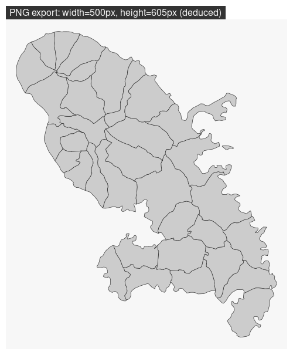
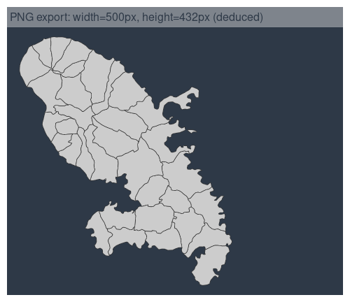

How to Export Maps
Timothée Giraud
2024-07-30
Source:vignettes/web_only/how_to_export_maps.Rmd
how_to_export_maps.Rmdmf_export() exports maps in PNG or SVG
formats.
The exported map width/height ratio will match the one of a spatial
object.
If width is specified, then height is deduced
from the width/height ratio of x and some theme parameters
(figure margins and title size).
If height is specified, then width is deduced
from the width/height ratio of xand some theme parameters
(figure margins and title size).
Additionally, mf_export() (and mf_map()) can
be used to extend the map space on one or several side of the figure, or
to center a map on a specific area.
Simple Export
In this example we only set the width of the exported
figure.
library(mapsf)
mtq <- mf_get_mtq()
mf_export(
x = mtq,
filename = "fixed_width.png",
width = 500
)
mf_map(mtq, add = TRUE)
mf_title(txt = "PNG export: width=500px, height=605px (deduced)")
dev.off()
Note that we have to set add = TRUE to the first
layer plotted. Internally, mf_export() start a
device (PNG or SVG) with a specific dimension (figure size) and extent
(x extent).
Export with Extra Space on the Figure
Here we have added some space on the right side of the plot (50% of
x width).
mf_theme("dark")
mf_export(
x = mtq,
filename = "fixed_width_expand.png",
width = 500,
expandBB = c(0, 0, 0, .5),
)
mf_map(mtq, add = TRUE)
mf_title(txt = "PNG export: width=500px, height=432px (deduced)")
dev.off()
mf_theme(NULL)
Note that mf_export() uses the current theme. If
a theme is set between an mf_export() call and a
dev.off() call it will not be correctly
applied.
Center the Map on a Specific Area
In this export, the map is focused on a specific spatial object.
height is fixed and width is deduced.
target <- mtq[5, ]
mf_export(x = target, filename = "fixed_height_centered.png", height = 600)
mf_map(mtq, add = TRUE)
mf_shadow(target, add = TRUE)
mf_map(target, add = TRUE)
mf_title(txt = "PNG export: height=600px, width=433px (deduced)")
mf_scale(1, pos = "bottomleft")
dev.off()
Other Parameters
mf_export() can produce SVG figures (with
export = "svg") and use other parameters of
png() or svg() functions
(e.g. res, bg or family).
mf_theme("nevermind")
mf_export(
x = mtq,
filename = "fixed_width.svg",
width = 5,
bg = "black"
)
mf_map(mtq, add = TRUE)
mf_title(txt = "SVG export: bg = 'black'")
dev.off()
mf_theme(NULL)